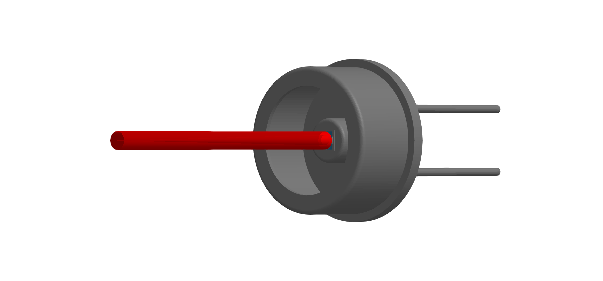
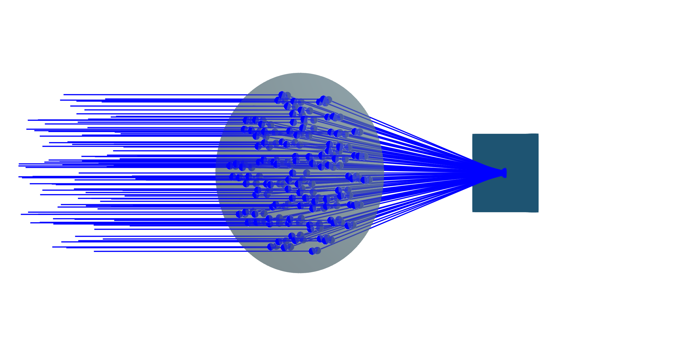
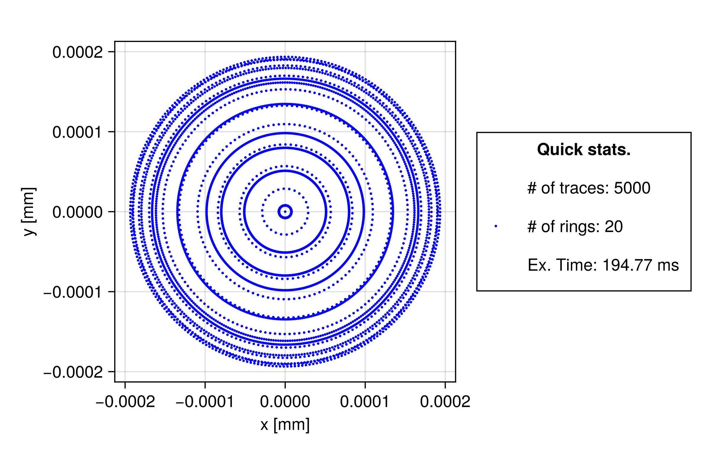

Detectors
Detectors provide a way to evaluate beam data during optical simulations. They are designed to accumulate e.g. field data, enabling analysis of intensity distributions, interference patterns, and other beam properties.
Detectors are supposed to fall under the BeamletOptics.AbstractDetector type, which defines a interface for detector implementations.
In general, the data stored in a detector is not automatically reset between calls of solve_system!. This task is placed within the responsibility of the user. A detector reset can be performed with the empty! function.
Photodetector type
A concrete implementation to "measure" intensity distributions generated by a GaussianBeamlet is provided in the form of the Photodetector:
BeamletOptics.Photodetector — MethodPhotodetector(width, n)Spawns a quadratic rectangular 2D Photodetector that is aligned with the positive y-axis. Refer to the type docs for more information.
Inputs:
width: edge length in [m]n: field discretization factor, higher results in more computational cost
The interact3d model of the Photodetector can store complex electric field (E-field) values from intersecting GaussianBeamlets, enabling the reconstruction of spatial intensity distribution across its active surface. This data can be used to calculate e.g. beam interference patterns via the BeamletOptics.intensity function. The BeamletOptics.optical_power method can be used in order to obtain the total optical power at the detector. Below a rendered example of a detector model (FDS010) can be seen. The detector active area is marked in blue (1x1 mm²).

One of the use cases of the Photodetector is to analyse interference patterns. The figure below demonstrates an example intensity distribution captured by the detector pictured above, showing radial fringes due to a mismatch of the radii of curvature of the interfering GaussianBeamlets.
Refer to the Michelson interferometer section for a detailed tutorial on how to use the Photodetector.
Spotdetector type
A straight forward detector that stores the BeamletOptics.Intersection position of an incoming Beam. The Spotdetector can be used to generate spot diagrams, which are commonly used to perform initial assessments of the optical performance of an imaging setup.
BeamletOptics.Spotdetector — MethodSpotdetector(width)Generates a quadratic rectangular 2D Spotdetector that is aligned with the negative y-axis. Refer to the type docs for more information.
Inputs:
width: edge length in [m]
Below an optical system consisting of a collection of collimated Beams passing through a ThinLens is shown. A Spotdetector is positioned at the approximate focal plane to capture the resulting spot diagram.

The beam bundle used to generate the spot diagram was created via the CollimatedSource constructor. The resulting spot diagram of the lens shown above is visualized below.
